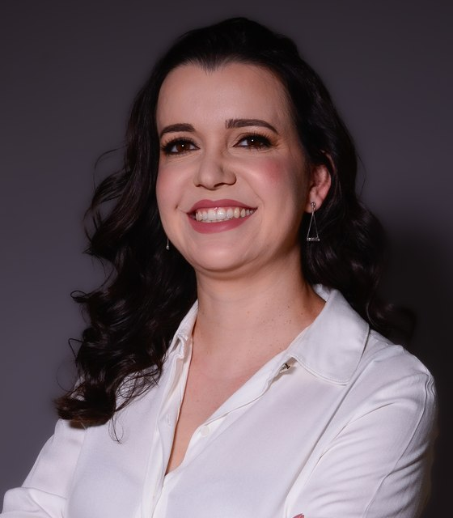
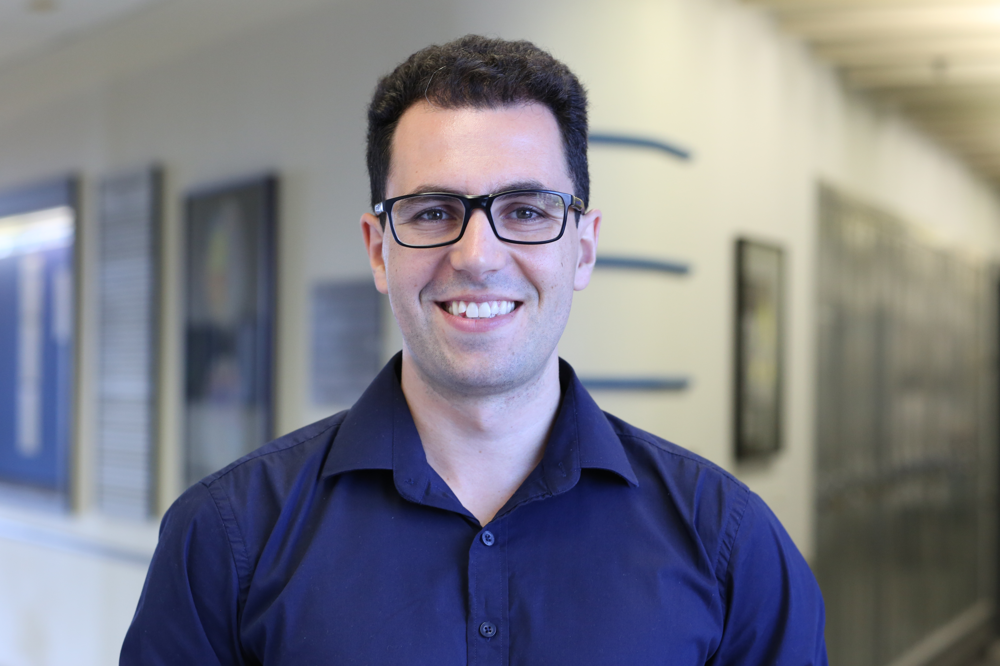
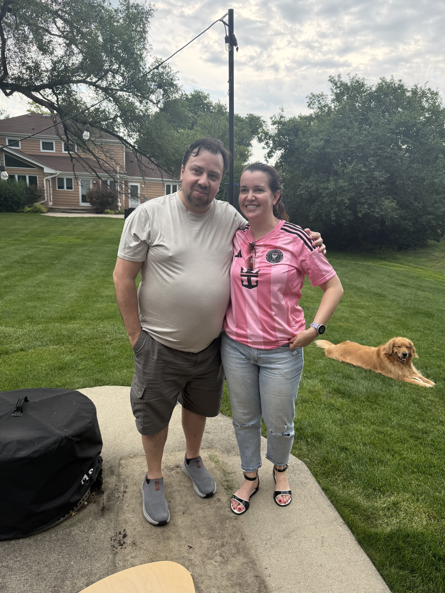
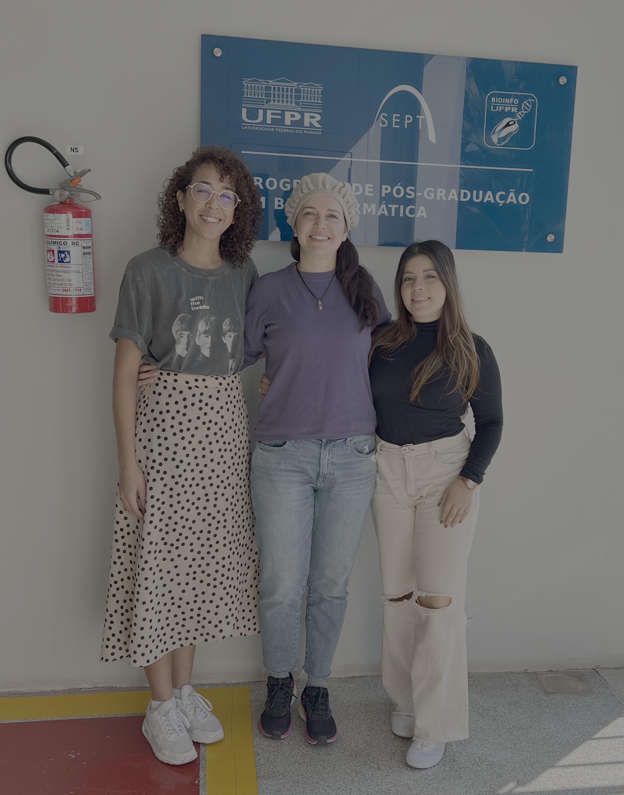
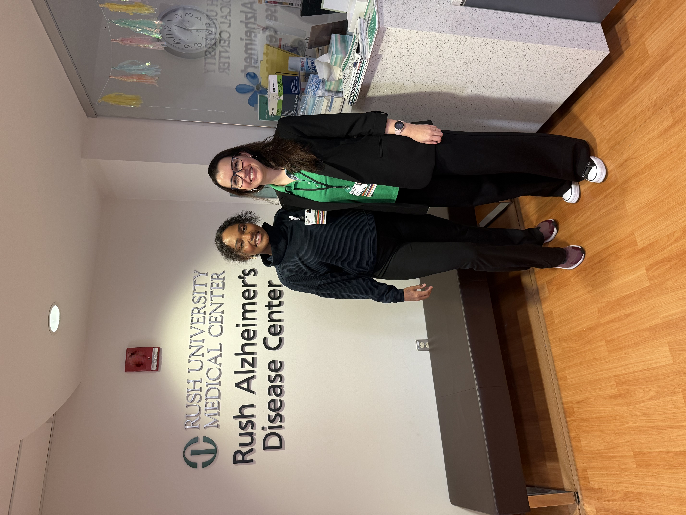
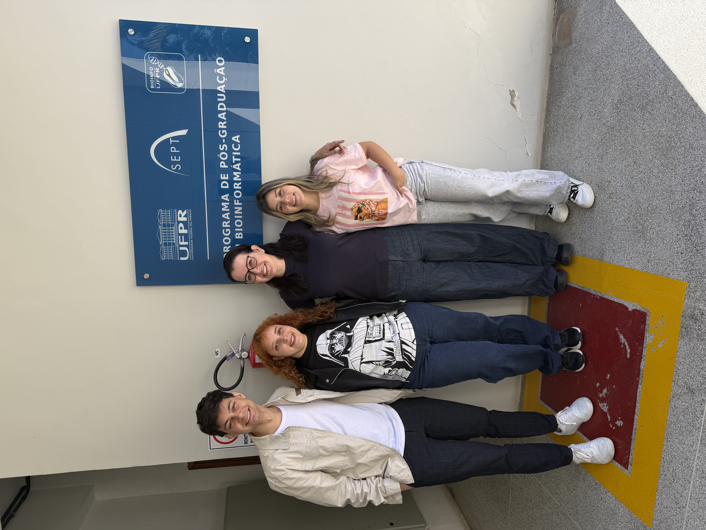
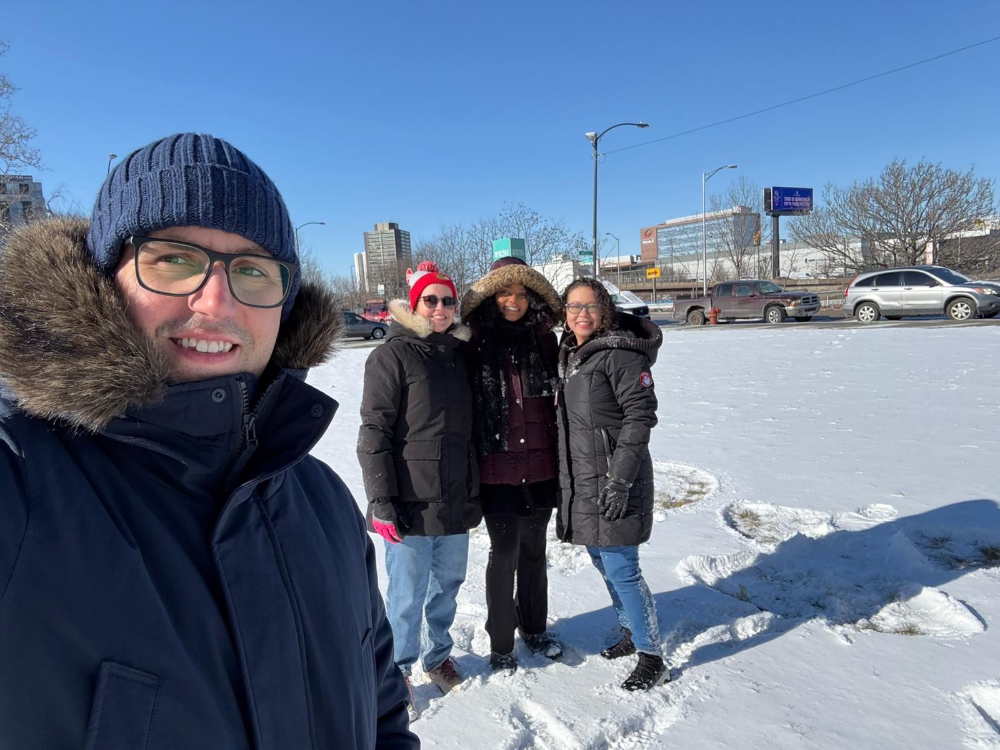
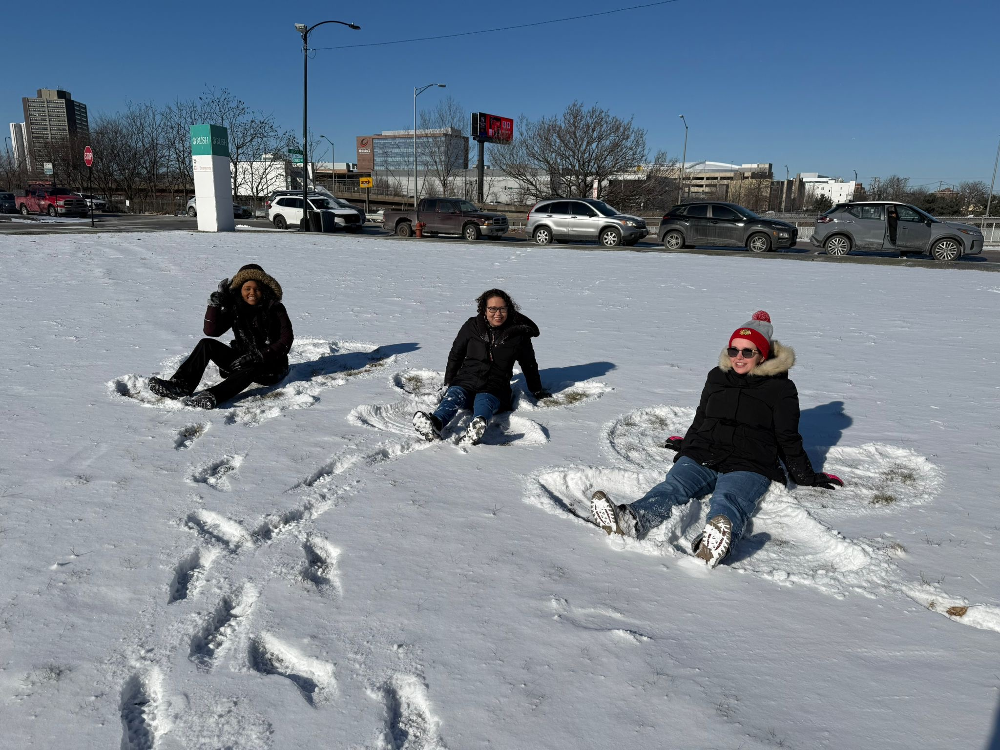
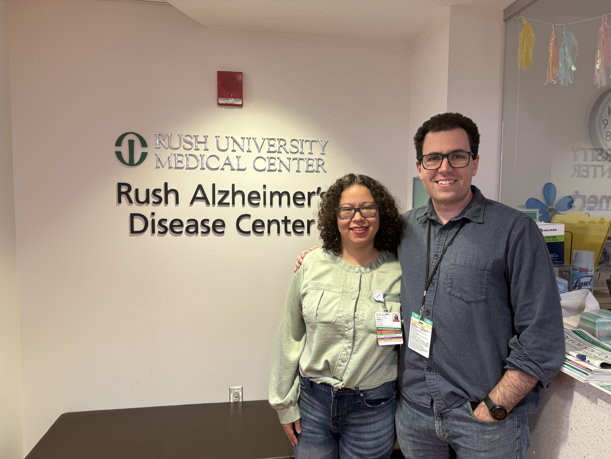
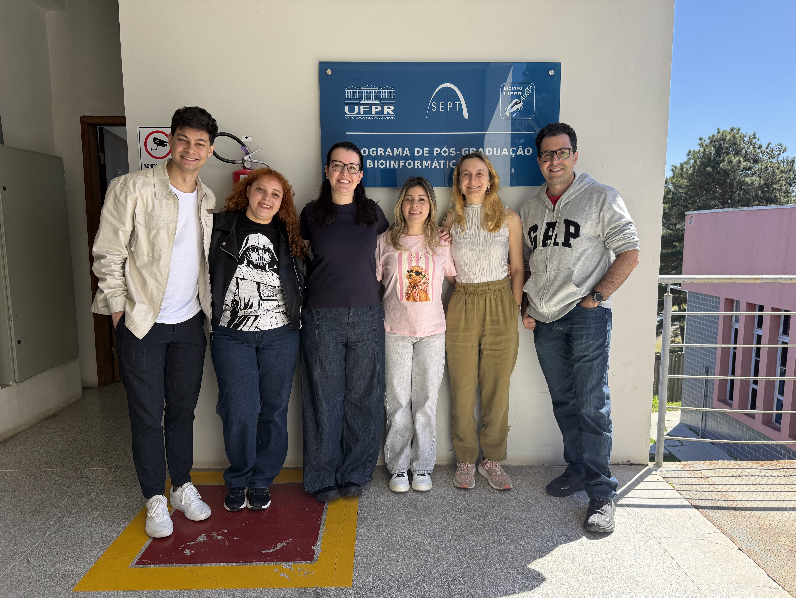

Lopes & Vialle team
Since 2022, I’ve partnered with Dr. Ricardo Vialle to mentor a group of computational biologists. Our multidisciplinary team uses bioinformatics to analyze multi-omics data and understand how the brain ages. We bring plenty of curiosity and a healthy skepticism of any script that runs on the first try.

Dr. Katia Lopes

Dr. Ricardo Vialle
-

Claudio Martins and Clops the dogHealth Sciences IAMSPE -

Juliana Beker Godoy and Loren dos SantosBioinformatics UFPR -

Rebecca CruzRotation RADC -

Davi Albini, Hellora Correia and Loren dos SantosBioinformatics UFPR -

Rebecca Cruz (left) and Camille SantosRotation RADC -

Rebecca Cruz (left) and Camille SantosRotation RADC -

Camille SantosRotation RADC
